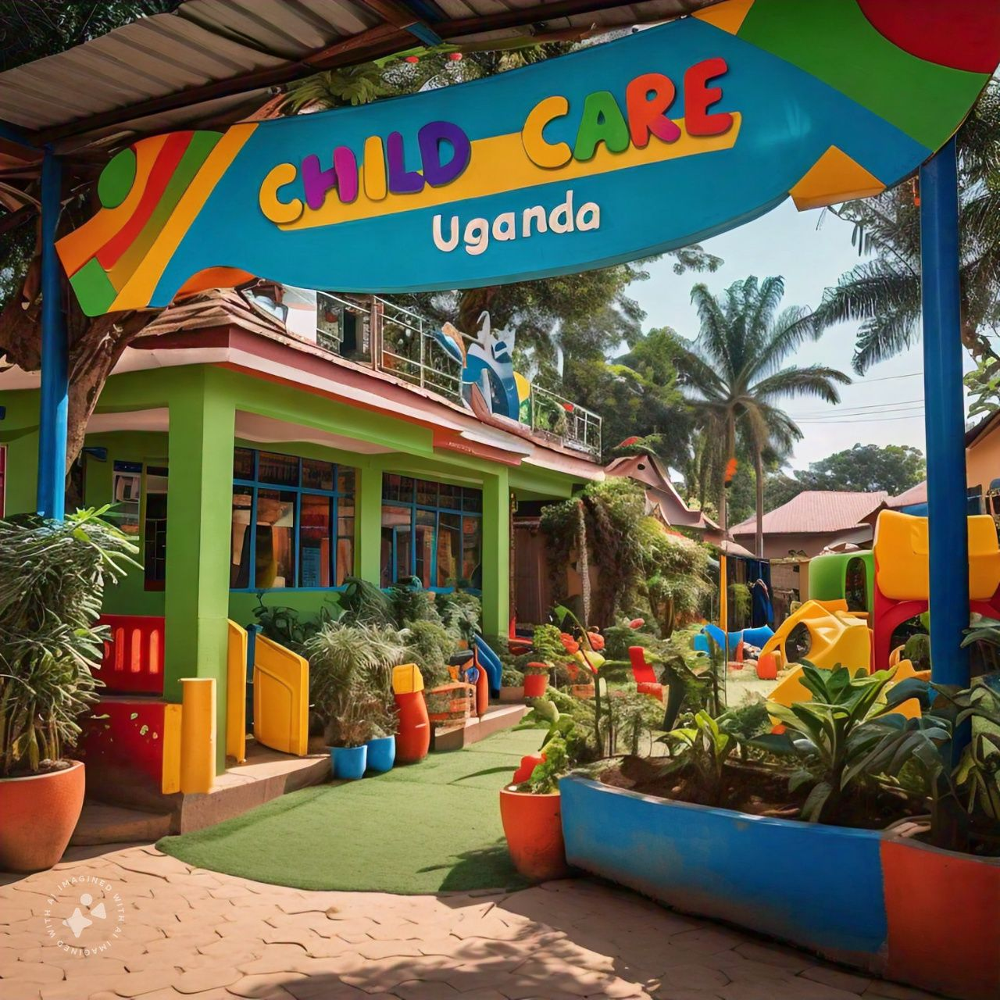

HOME BECOME A SPONSOR CONTACT US:

Uganda Child Care works with
vulnerable young people in need
of support in Masaka City,Central Uganda
ABOUT US
What UCC supports children in Uganda?
Since 2005, JOY FOR CHILDREN UGANDA has been championing the rights of all children to live peacefully & without exploitation, to benefit from quality free education, to thrive in economic security & justice, and to prosper with access to clean water, good health care, & nutrition.
What is daycare explained?
CHILD CARE CENTERS: A Child Care Center (or Day Care Center) is usually located in a commercial building. Non-medical care and supervision is provided for infant to school age children in a group setting for periods of less than 24 hours.
Not everyone has the chance to grow up in a safe environment. UCC is providing a place of hope, love, care, safety, education, healing and gives hope for a new and better future perspective. To ensure this, the Ugandan and German Team is working hand in hand together. Together we can make a change , this is why the international cooperation is a base for our success.
"We are convinced that all young people are valuable and loved - regardless of their background, health or social status. They should know about their worth. It is important to us that the young people experience this with us." Get to know the faces behind the Ugandan and German team:
WORDS OF OUR CABINENT
CHAIR PERSON
Being involved together and being able to support children in their development fills me with great joy.VICE CHAIR
It is important to me to help young people experience appreciation and have prospects for the future in order to make their environment worth living in
OUR SECRETARY
UCC gives young people a real chance to shape their lives and develop their potential. I would like to make a small contribution to this through my commitment.
OUR TRESSURER
The association's work makes a big difference in Uganda and plants hope in the young people. I am very grateful to be part of it to make an impact
.OUR AMBASSORDOR-CHINA
It's a privilege to be able to support and help others in our life. And when it comes to those in need who do not have the power or resources to change their own life for the better, our privilege to help becomes a responsibility.
OUR GALLERY
THIS IS THE GALLERY
.jpeg)
.jpeg)
.jpeg)
.jpeg)
.jpeg)
.jpeg)
.jpeg)
.jpeg)
.jpeg)
.jpeg)
.jpeg)
.jpeg)
.jpeg)
.jpeg)
.jpeg)
.jpeg)
The organisation was started in the early years of 1963,and it was a plan of a chinese man named kim chong ho who came up with with a plan of starting a charity organisation and at the start it was called UGANDA-CHINA CHARITY GROUP and later in 1987 ,The Gorvernment uganda decided to come in touch with this organisation and it was immediately named Uganda Child Care'it was made to be helping the ugandan children who would luck basic needs of life and even support them in empowering their education status.
| NAME | COUNTRY | GENDER | CHILD | CONTACT | REMARKS | AMMOUNT | THANK YOU FOR SUPPORT |
| JOHN KING | TURKEY | M | ATUHAIRWE.B | +2435674983459 | IN SERVICE | $600 | |
| G.JESUS | BELIGIUM | M | FRANK.G | +4537474753876 | I WILL SUPPORT | $600 | |
| FARTET.F | SOMALIA | F | NATASHA.J | +4586476766346 | IN SERVICE | $670 | |
| MOSCO.D | EUROPE | M | MARIAM.K | +9665437843688 | WISHING TO SERVE | $655 | |
| PALMA.G | CANADA | M | SEMENYO.L | +67584868783848 | I WIIL SERVE | $580 | |
| J.MARIA | USA | F | BRANDON.J | +6758874834938 | GLAD TO SERVE | $600 |
This is how we do our charitable work
Our goal is only to support children to build a strong tommorow's foundation for all
in the whole world
children's well being and mental health
can have sustainatial effects on their
physical development,school
perfomance, relationships with family
and friends and engagements in their community
This is why we are taking a three-pronged approach to addressing mental health concerns: direct service delivery,
capacity building, and research with specific focus
on children and youth in the region. CCU is a collaborator on the Project 'Wang Oo Relit' (WORP) supported by funding
from Grand Challenges Canada to Kwantlen Polytechnic University. We are working as a team of youth leaders,
counselors, researchers and
community elders to find and implement the evidence-based, culturally appropriate best practices in improving youths’
psychological well-being. Specifically, WORP’s aim is to
strengthen youths’ mental well-being and resilience by reducing stigma around mental health, sharing knowledge about
mental sicknesses and health, and developing skills, such as coping with stress, mindfulness activities and building
peer-support strategies.
Would you like to get to know the amazing team working on
Become a partner by sharing the
vission and purpose to achieve the
same goals for our young generation
By collaborating with us we can
make the world of valunarable
children a better place.As partners we are learning from each other,
moblising resources andsharing
responsibilities to create a
safer environment for the young
generation
You get involved by donating
to our cause,voluntering with us
being an ambasador or by partning with our organisation
We would love to get to know you
Our work is based on good christianity values:
"And now these three remain:
faith,hope and love.
But the greatest of these is love"
1.corinthians 13:13